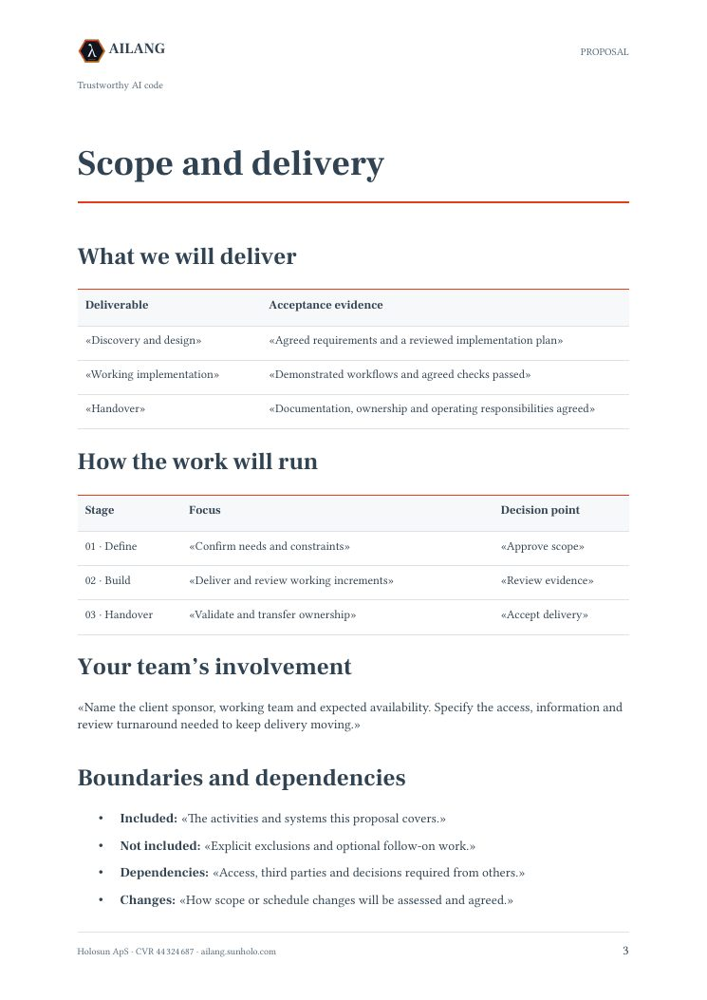
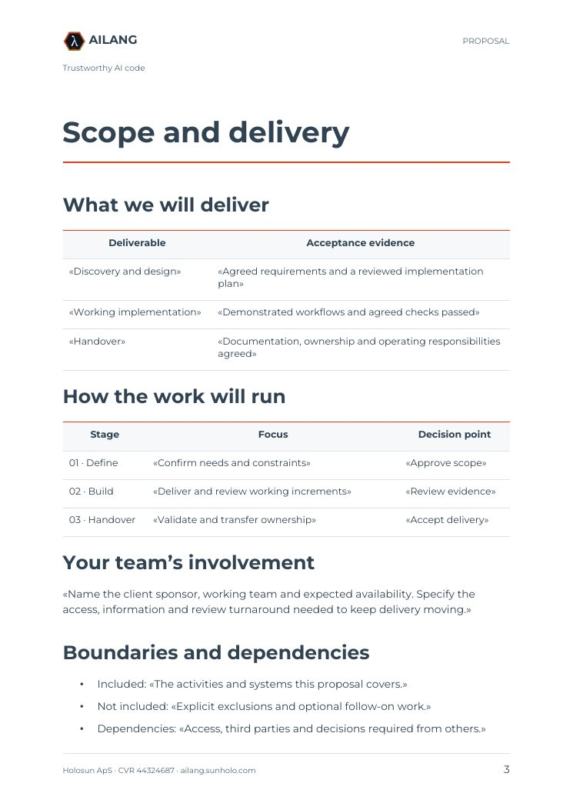
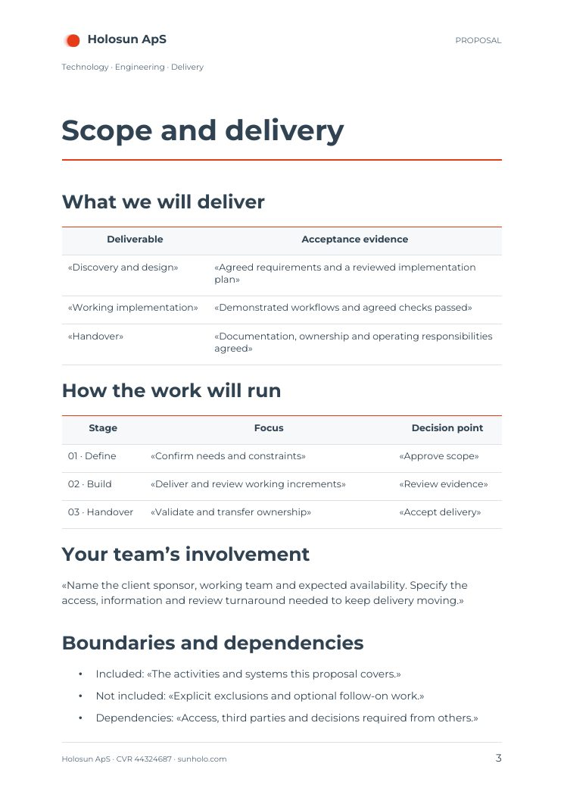
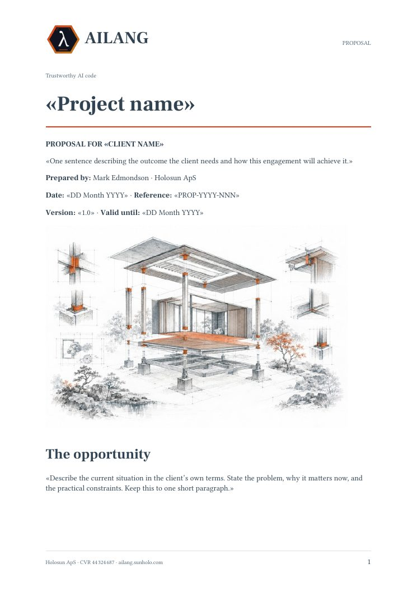
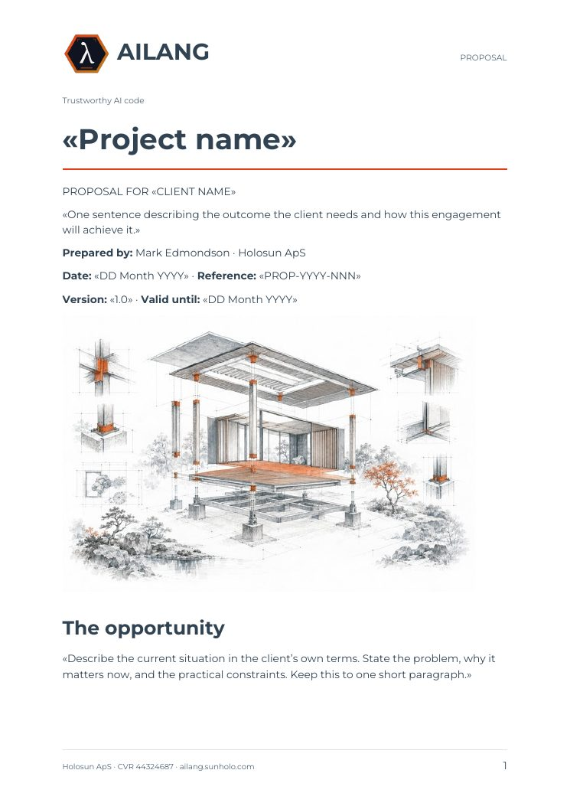
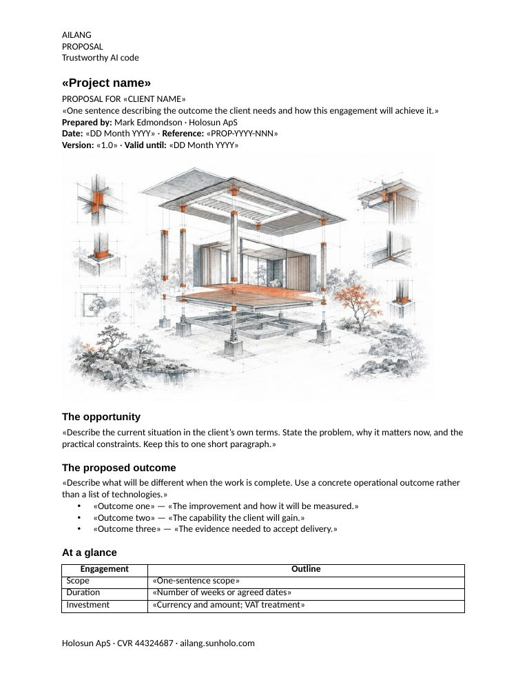

Switch templates with one flag
The look of the Word document comes from the template you pass with --reference-doc. Here is the same page, recovered from one PDF, in five looks. Nothing else in the command changes.
Click a page to open it next to the source PDF, just below.
ailang-reference.docx downloadclassic-reference.docx downloadmodern-reference.docx downloadminimal-reference.docx downloadno template fileAny .docx works as a template: your letterhead, last year’s report, a document from your design team. AILANG Parse takes its styles, fonts, page setup, header and footer. Tables use the template’s table style: the one named “Table”, or else the first it defines, or the one you name with --table-style. The Classic, Modern and Minimal templates above are three small files you can download and edit in Word. The viewer below also has the AILANG design for two more brands, Holosun and Sunholo.
Live example
A real PDF on the left, the Word document generated from it on the right. Pick a template to change the look.
Browsers can’t display .docx, so the Word document is shown as LibreOffice renders it. If your browser does not show PDFs in the page, the screenshots below are the same pages.






Information is lost when the PDF is made
A Word document knows that a line is a heading, that three lines are a list, that a grid is a table and that a line at the top of every page is a page header. Saving it as a PDF discards all of that and keeps only where each character is drawn. Getting a Word document back means working the structure out again from the page.
Everything after the read is exact. The same blocks always produce the same document, and your template supplies its styles, fonts, page setup, header and footer unchanged. So the quality of a PDF-to-Word conversion depends on one step: how well the PDF is read.
The recovered structure
This is what AILANG Parse read from the PDF above, loaded from the actual output file. Every Word document on this page was generated from these blocks.
What is recovered
| In the Word document | How it is read back from the PDF |
|---|---|
| Heading levels | From font size, compared with the body text. Larger sizes become higher levels, and a bold line slightly larger than the body counts as a heading too. Numbered headings (“1. Overview”) stay headings, not lists. |
| Paragraphs | Lines are rejoined into paragraphs using the document’s own line spacing. The PDF’s line breaks go and the paragraph breaks stay. |
| Lists | From bullet and number markers, with nesting from indentation. Numbered lists stay numbered. |
| Tables | From rows whose cells line up in shared columns. Wrapped text is put back in its cell. Tables stacked above each other with different columns stay separate. Text set in two columns is read column by column and not mistaken for a table. |
| Page header, footer, page numbers | Lines that repeat at the top or bottom of the pages become one header and one footer. With a template, the template’s header and footer replace them. Without one, they become the Word document’s header and footer. |
| Pictures | Illustrations, photos and figures in the body are placed where they were, at the size they had on the page. Logos in the page header and footer are not copied, because the template has its own. |
| Bold, italic, links | Kept on the words that had them. |
| Text | Some PDFs draw a letter twice. It is read as one letter, so “The” does not come back as “Thee”. |
What a PDF can’t give back
Some of what was in the original is not in the PDF, so it cannot be recovered:
- Style names. The PDF shows a 20pt bold line, not “Heading 2”. Levels are relative: if a document’s only heading was a Heading 2, it comes back as the top level.
- Page breaks you inserted. A PDF records where pages ended, not why. The Word document flows its pages again in the template’s page size.
- Headings that look like body text. If headings had the same size and weight as body text, nothing in the PDF shows they were headings.
- Merged cells are recovered as far as the column layout allows. A cell spanning several columns may come back split.
- Header and footer logos. A logo in the page header or footer is not copied into the Word header, because the template has its own. Without a template, the header has the text only.
- Charts and diagrams as pictures. A chart comes back as an image of the chart, not as editable chart data.
When you still have the original .docx, parse that instead: its structure is still in the file. This page is for when the PDF is all you have.
Choosing a backend
A backend is the PDF reader AILANG Parse uses. Different PDFs need different readers, and you pick one with --pdf-backend. Whichever you pick, the steps after it are the same: the page header and footer are separated from the body, the Word file is written, and your template is applied.
| Backend | Use it for | Needs |
|---|---|---|
poppler | PDFs that contain real text: reports, proposals, contracts, anything exported from Word. Gives headings, lists, tables, pictures, header and footer. The usual choice for PDF to Word. | poppler only |
docling | Scanned PDFs (it runs OCR) and complex layouts. Keeps pictures too. Without a --pdf-backend flag, a PDF with no text in it is sent here automatically. | a Python package on your machine |
pdftotext | The default for parsing: the most complete plain text, with the layout kept as it is. In a conversion the header and footer are still separated out. Text only, no pictures. | poppler only |
liteparse | Fast text with headings from font size, when tables and pictures don’t matter. | a Python package on your machine |
ai | Handwriting and visually complex pages. Used only when you ask for it. | an AI provider key |
--pdf-backend poppler. If it reports that the PDF has no text, the PDF is a scan: use --pdf-backend docling, or leave the flag off and docling is used automatically. If a document looks wrong, try another backend. The rest of the command stays the same. PDF Parsing compares the backends.Run it
# PDF to Word, styled by your own template
docparse report.pdf --pdf-backend poppler \
--convert report.docx \
--reference-doc house-style.docx
# Bind tables to a table style from the template
docparse report.pdf --pdf-backend poppler --convert report.docx \
--reference-doc house-style.docx --table-style "Grid Table 4"
# No template: plain styles, the PDF's header and footer kept as Word's
docparse report.pdf --pdf-backend poppler --convert report.docx
# A scanned PDF: same command, read with OCR
docparse scan.pdf --pdf-backend docling --convert scan.docx --reference-doc house-style.docxThe same command also converts to ODT, HTML, Markdown and Quarto: change the extension after --convert. For slides, see PDF to PowerPoint. Any existing .docx works as a template, and the proposal templates are a ready example. Install the CLI from the docs.
Frequently Asked Questions
Is converting a PDF back to Word lossless?
No conversion from PDF can be. A PDF records where characters are drawn, not which line is a heading, a list item or a table cell. AILANG Parse recovers that structure from the layout (font size, alignment, lines that repeat on every page). It then writes the Word document exactly from what it read, so nothing more is lost.
Do I need a Word template?
No, but it gives the best result. Without one you get a clean, editable DOCX with real headings, lists, tables and the PDF’s header and footer. With --reference-doc, the styles, fonts, page setup, header and footer come from your own .docx, so the output is in your house style.
Which PDF backend should I use?
poppler for PDFs that contain real text, docling for scans and complex layouts, ai for handwriting. Switching is one flag, and the rest of the conversion is the same. See Choosing a backend.
Does it work on scanned PDFs?
Yes. Use --pdf-backend docling, which runs OCR on your machine. Without a backend flag, a PDF with no text in it is sent to docling automatically. The conversion and the template then work as for any other PDF.
Is my PDF uploaded anywhere?
Not with the CLI and the local backends (pdftotext, poppler, docling, liteparse): the PDF is read and the Word file is written on your machine. Only --pdf-backend ai sends pages to the AI provider you choose, and it is used only when you ask for it.